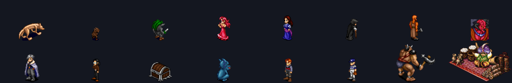
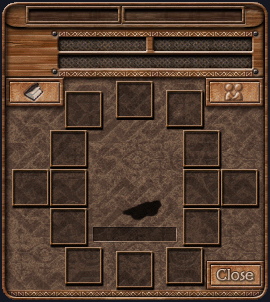
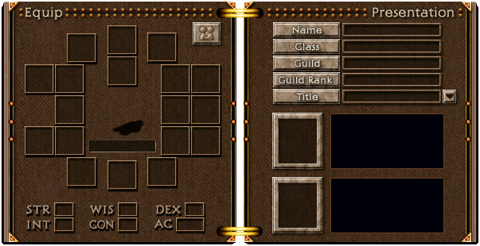
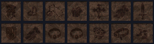
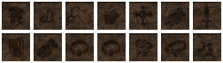

맵·사람·이동 패킷을 Godot 실제 좌표에 연결
Command overview
개발 전체가 한눈에 보여요
서버 안정화부터 모바일 화면, 게임 데이터, 운영 준비까지 한곳에서 이어서 볼 수 있어요.
스냅샷 생성 시 테스트 결과를 연결
평문 비밀번호와 파일 저장은 운영 전 교체 필요
생성된 스냅샷 · 원문 링크로 재검증
Now
지금 해야 할 일
01
서버 좌표를 Godot 월드에 연결
WorldSession을 통해 맵·사람·이동 값을 화면에 반영합니다.
02
P0-14~17 안정화 마무리
완전 전송, 원자 저장, 기본 전투, 하드코딩 설정화를 검증합니다.
03
Mac/iPhone 실기기 gate
macOS 실행, Xcode export, arm64 설치를 확인합니다.
Decision radar
판단이 필요한 경계
모바일 통신직접 TCP 또는 TLS 게이트웨이미결정
콘텐츠 운영변경 검증·버전·롤백 기준 있음자동화 없음
관측성로그·지표·추적·SLO미계측
배포 근거소스→빌드→아티팩트 연결부분
Original assets
원작 자산 파이프라인

캐릭터·괴물은 읽힘. 벽 타일, 아이템 아이콘, 대화·효과·음악은 다음 변환 대상입니다.
Original UI
원작 장비창 — 구형과 신형

lequip.txt + equip01.epf · 266×298 · 칸 14개, 각 33×33. 장비만 있는 거의 정사각 창이라 세로 폰에 그대로 들어갑니다. 장신구·겉투구 자리는 없습니다.
_nui_eq.txt + _nui_eq.spf · 599×306 · 칸 18개, 각 32×32. 책 두 쪽이라 왼쪽이 장비, 오른쪽이 이름·직업·무리·칭호·초상·능력치입니다. 18칸이 서버의 자리 번호와 그대로 맞습니다.
equip07.epf 14종
_nui_eqi.spf 14종 — 같은 부위, 같은 차례종이인형은 두 세대 모두 110×84 로 같습니다. 신형은 .spf 라 색표를 파일 안에 들고 있고, 구형은 .epf + gui00.pal 입니다 — setoa.dat 의 색표 18개 중 맞는 것은 그 하나뿐입니다.
Software catalog
무엇이 어디에 있는가
코드를 직접 읽지 않아도 각 구성요소의 책임·위치·의존 관계·생명주기를 찾을 수 있습니다.
레거시 자료→자산 변환→Godot 모바일⇄프로토콜⇄Hades 서버⇄콘텐츠 저장소
Feature trace
기능은 어디를 지나가는가
사용자 행동에서 서버 판정과 데이터, 테스트, 운영 신호까지 한 줄로 추적합니다.
End-to-end path
Delivery map
개발 흐름과 지식 그래프
로드맵과 검증 근거, 코드·문서의 연결을 한 화면에서 함께 봅니다.
현행 고정
로그인→월드 입장과 초기 상태 기록
통과연동 안전선
네트워크·저장·전투 안정화
4 / 8월드 플레이
맵, 캐릭터, 이동, NPC 대화
진입 중게임 루프
전투, 스킬, 아이템, 퀘스트
대기서비스 운영
보안, 백업, 관측, 배포
기준 정리완료
7P0-10패킷 검증·예외 격리검증됨
P0-11이름·저장 경로 검증검증됨
M0Godot 로그인·원작 그래픽완료
진행 중
2M1-01월드 패킷과 화면 좌표 연결
현재 NEXT-ACTION
작업 중ASSET아이템·벽 자산 해석
원본 자료만 사용
분석 중다음
4P0-14송신 큐·완전 전송대기
P0-15원자 저장·복구대기
P0-16기본 전투 정확성대기
P0-17주소·포트 설정화대기
Interactive map
프로젝트 연결망을 여기서 탐색
표시 방식 확인 중
확대·이동·노드 선택으로 구현 위치와 문서 근거를 탐색합니다. 현재 작업 검색에서 월드, 대상 선택, 전투, 인벤토리 구현 단위가 함께 발견됐습니다. 작은 화면에서는 그래프 안을 가로로 움직여 전체 작업면을 볼 수 있습니다. 생성 시각화는 마우스 중심이므로 키보드 사용자는 위 분석 보고서와 오른쪽 구현 위치 목록을 이용해 주세요.
Snapshot
대시보드 상태 갱신
node scripts/generate-dashboard-snapshot.js --verifyWorld connectivity
Hades 지역 실제 맵·워프
노비스 마을·포테의 숲·우드랜드를 전환해 Hades 실제 맵, 이미지 위 워프 좌표와 다음 목적지를 함께 확인합니다. 없는 연결은 추측하지 않습니다.
전체 월드 탐색기 초안 보기
- 1연결 구역서로 오갈 수 있는 맵 묶음
- 2현재 맵가운데에서 출발점을 확인
- 3워프 방향들어오는 길과 나가는 길을 구분
Connected regions
연결 구역 구조도
각 구역은 다른 구역과 끊겨 있습니다. 구역을 누르면 대표 맵부터 살펴봅니다.
조건에 맞는 기술이 없어요. 필터를 지워 보세요.
조건에 맞는 아이템이 없어요. 필터를 지워 보세요.
Game knowledge
게임 데이터 게시판
스킬·마법·캐릭터·퀘스트와 월드 데이터를 출처·확인 수준과 함께 관리합니다.
일치하는 항목이 없습니다.
검색어를 줄이거나 다른 분류를 선택해 보세요.
Live operations
게임을 계속 운영하려면
서비스에 필요한 보안·저장·관측·배포 업무를 놓치지 않게 정리합니다.
계정·보안
통제 미구현- 평문 비밀번호 제거와 안전한 해시
- TLS·토큰 세션·계정 복구
- 로그인 남용 방지와 권한 분리
저장·백업
기준 문서화- JSON 원자 저장과 실패 복구
- 불변 백업·복원 리허설
- 사용자 증가 시 DB 이전 기준
관측·장애 대응
기준 문서화- 서버 로그·지표·알림
- 변조 방지 감사 기록
- SEV 분류·역할·보안 사고 분기
배포·업데이트
기준 문서화- .NET 지원 버전 이전
- 빌드 출처·SBOM·서명 검증
- 앱·서버·데이터 호환과 롤백
게임 운영 도구
대기- 캐릭터·아이템 조회와 제재
- 공지·이벤트·퀘스트 배포
- 월드 상태와 경제 모니터링
권리·정책
결정 필요- 원작 리소스 사용 범위
- 개인 실험과 공개 배포 구분
- 개인정보·로그 보존 정책
Operational truth
운영 가능성 체크
영역현재 근거운영 기준상태
신뢰성로컬 특성화 테스트사용자 관점 SLI/SLO·오류 예산미계측
Maintenance queue
기술 부채를 기능처럼 관리
- .NET 5 지원 종료와 이전 목표 버전
- 직접·전이 의존성, 라이선스, 알려진 취약점
- 원작 자산의 출처·권리·변환 재현성
- 삭제·마이그레이션·호환 중단 결정 기록
Activation gate
언제 실시간 화면을 붙일까
공개 테스트 서버가 생기면 로그인·월드 입장·이동·전투에 trace를 연결하고, 사용자 관점 SLI와 알림을 이 화면에 붙입니다. 지금은 허위 숫자 대신 미계측으로 둡니다.
Prototype lab
화면 실험실
로그인부터 전투 HUD까지 모두 이 대시보드 안에서 바로 확인합니다.
Mobile flow
모바일 화면 6장

DARK AGES어둠의 전설
CHARACTER테스트 캐릭터
레벨 1 · 밀레스 여관
기본 게임맵·캐릭터·이동 패킷 연동 화면
여관 주인
어서 오세요. 무엇을 도와드릴까요?
벌HP 24 / 30
기본 공격 대상을 선택했습니다.
인벤토리
검옷물약
Interactive HUD
HUD 조작 시안
테스트HP 100MP 80대기